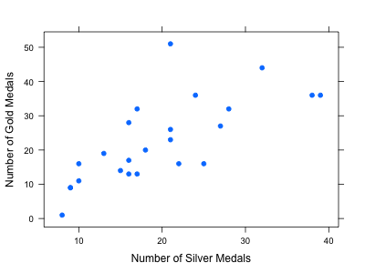
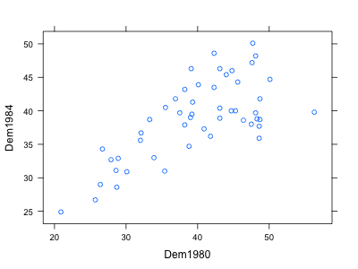
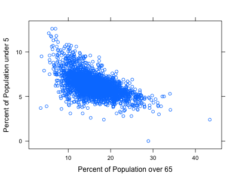
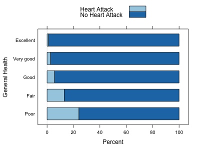

On the website you will find a dataset titled “Olympics”. It contains the number of gold, silver and bronze medals that various countries received in recent Summer Olympic games. The following scatterplot shows the relationship between the number of gold medals and the number of silver medals (so each dot corresponds to a particular country in a particular year). Describe the relationship between the two variables (outliers, form, direction, strength etc), with explanations. Why do you think they are related in the way they are? If there are outliers, look them up in the file and try to guess why they are there, etc.

The dataset on the website called “Voting” contains the percentages that the democratic party obtained on each state for the 1980 and 1984 elections. The following scatterplot compares 1980 and 1984 results. Each point corresponds to a state, and the values on the two axes are the percentages of democrat support in that state on the two elections. Describe the relationship, explaining both the overall pattern and anything that stands out. You should be seeing two clusters and a possible outlier. After looking up who the candidates were both times, and where they were from, explain the presence of the clusters and outlier. You may want to load the data set in RStudio to identify which states each point corresponds to. You can do so using the “Import Dataset” interface, then copying and pasting the dataset URL, then Update, and finally setting the Delimiter option to Tab. Then the name voting corresponds to your data.

The following scatterplot is from the counties data and compares the percent of the population in a county that is over 65 years old with the percent that is under 5 years old. Describe the overall association, and provide some plausible explanation. Are there any outliers worth mentioning?

The following stacked bar chart shows the relation between a person’s perceived health level and whether that person was ever told that they had a heart attack. Describe the relationship. What can we say about the relationship between health level and risk of a heart attack?

Consider the following data
| x | 2 | 3 | 4 | 5 | 6 | 7 | 7 |
|---|---|---|---|---|---|---|---|
| y | 3 | 3.5 | 4.5 | 5.3 | 5.2 | 5.8 | 5.6 |
| x | y | \(x-\bar x\) | \(y-\bar y\) | \((x-\bar x)(y-\bar y)\) |
|---|---|---|---|---|
| 2 | 3 | |||
| 3 | 3.5 | |||
| 4 | 4.5 | |||
| 5 | 5.3 | |||
| 6 | 5.3 | |||
| 7 | 5.8 | |||
| 7 | 5.6 | |||
| \(\bar x=\qquad\) | \(\bar y=\qquad\) | \(s_x =\qquad\) | \(s_y=\qquad\) | \(r=\qquad\) |
c. Draw a vertical line at the mean of x and a horizontal line at the mean of y, and explain what contribution the various points would be giving to the correlation coefficient.